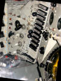
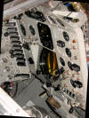
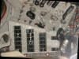
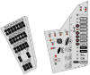

Spacecraft Replicas
Flight makes the imagination Limitless...
|
Instrument Panels
|
|
I always had trouble figuring out exactly what each instrument panel in the various Mercury Capsules looked like. Every time I looked at a photo or drawing, they looked different. It turns out that every capsule had a unique instrument panel. Some were similar but no two were alike. After many years of collecting and searching, I thought I had a diagram of every capsule's panel. Once again, every time I went looking for something or saw a reference to something, they were different. I decided to try to document each and every Mercury Capsule instrument panel. After all, there were only 20, production capsules, plus a mock-up, plus a few trainers...How hard could it be...This web page is a start to document each and every one. I have been able to verify almost everything I have drawn from photos of the actual panels. Some of the photos were fuzzy or hard to see some details. If you have a photo or reference of an actual panel that conflicts with these models, please let me know. I'll continue to draw the panels as I get time. If you want something I don't have here, let me know and I'll move it to the front of my list. These initial models are provided in support of the 1/4 paper capsule project. All the panels are presented in exactly 1/4 scale. Check for rev letters in the title for the latest part. If you want a full size version of any of these panels, send me a note telling me what you want it for and I'll get send it to you. I'll re-generate the PDF file so you get the full resolution. I had a lot of fun drawing them and I learned a lot! I hope you find them useful. As of 7/29/07, all of the panels were updated. Sorry about any inconvenience...The changes were mostly to clean up some switches, re-color some minor details to make them stand out more, make the tick marks in all the instruments more visible in the printed versions.
SC7 Freedom 7 Alan Shepard The most noticeable thing about 7's panel is it was smaller than the other manned panels. It was missing the far right side. It was also colored like most airplane instrument panels of the day, a light gray. Subsequent panels had changeable labels under most controls where 7's labels were mostly engraved into the panel.
   
SC13 Freindship7 John Glenn The panel in 13 can really be called a baseline for the short orbital missions. It included the Earth Path Indicator and the Periscope. Both of these were eventually deleted. I might not model the panel for Liberty Bell 7 (SC11). It was very similar to 13 when it flew. The rebuilt one in the capsule today is different than when it flew. Some of the instruments were just gone and couldn't be replaced in the mock-up panel. Its difficult to find actual original photos of this panel to build an accurate model from. If you have any, please send them to me and I'll do a panel and post the photos. And of course, check out the virtual 360 tour of 13 at: http://www.nasa.gov/mission_pages/mercury/index.html
SC18 Aurora7 Scott Carpenter Scott's panel was similar to John's (13) with a few exceptions. The EPI was deleted. I don't have a photo of the original door covering the EPI space. Its missing in the capsule today but you can see where the hinge was. There were some other minor differences and I think I got them all. The sequencer panel is nearly identical.
SC16 Sigma7 Wally Schirra Again, it appears similar to 13 but there are some obvious differences on the right side. There are also some obvious differences on the sequencer panel side.
SC20 Faith7 Gordo Cooper May 15-16, 1963 This panel is the last one to fly. Its very similar to the much documented panel in SC15. One of the mistakes in documenting 15 (including the MRC model) is the omission of the telelight covers. They have been misplaced (swiped) through the years. While documenting 15 as it is today is fine, it really should also be documented as it would have flown. Maybe I'll model it one day, or if someone requests it. For now, these panels are quite representative of the Mercury Spacecraft as they flew. Last Updated 12/20/08 © 2007 SpacecraftReplicas.com |


{kind=link}
{kind=link}
{kind=link}